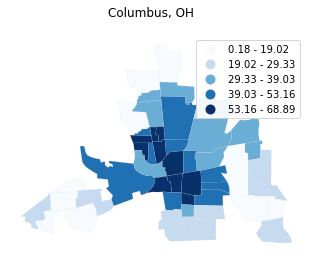
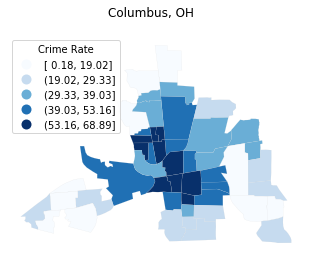
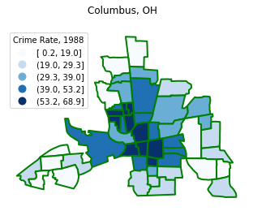
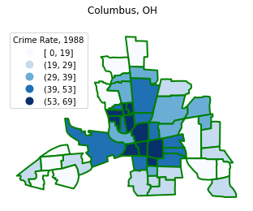

Demonstrating plotting with geopandas¶
Note that this relies on a development branch of geopandas: https://github.com/sjsrey/geopandas/tree/legendkwds that is planned for submission to geopandas.
[1]:
import libpysal
import geopandas as gpd
import mapclassify as mc
[2]:
columbus = gpd.read_file(libpysal.examples.get_path('columbus.shp'))
[3]:
q5 = mc.Quantiles(columbus.CRIME, k=5)
[4]:
q5
[4]:
Quantiles
Interval Count
----------------------
[ 0.18, 19.02] | 10
(19.02, 29.33] | 10
(29.33, 39.03] | 9
(39.03, 53.16] | 10
(53.16, 68.89] | 10
[5]:
q5.plot(columbus)
[5]:
(<Figure size 432x288 with 1 Axes>,
<matplotlib.axes._subplots.AxesSubplot at 0x7f196fba1710>)

[6]:
q5.plot(columbus, axis_on=False)
[6]:
(<Figure size 432x288 with 1 Axes>,
<matplotlib.axes._subplots.AxesSubplot at 0x7f196518f390>)

[7]:
q5.plot(columbus, axis_on=False, cmap='Blues')
[7]:
(<Figure size 432x288 with 1 Axes>,
<matplotlib.axes._subplots.AxesSubplot at 0x7f195bea5c50>)

[8]:
f = q5.plot(columbus, axis_on=False, cmap='Blues')

[9]:
f = q5.plot(columbus, axis_on=False, cmap='Blues', title='Columbus, OH')

[10]:
f = q5.plot(columbus, axis_on=False, cmap='Blues', title='Columbus, OH', \
legend=True)
---------------------------------------------------------------------------
TypeError Traceback (most recent call last)
<ipython-input-10-8c4a71aabec6> in <module>
1 f = q5.plot(columbus, axis_on=False, cmap='Blues', title='Columbus, OH', \
----> 2 legend=True)
~/Dropbox/p/pysal/src/subpackages/mapclassify/mapclassify/classifiers.py in plot(self, gdf, border_color, border_width, title, legend, cmap, axis_on, legend_kwds, file_name, dpi, ax)
1063 scheme=self.name,
1064 legend=legend,
-> 1065 legend_kwds=legend_kwds,
1066 )
1067 if not axis_on:
~/anaconda3/envs/analytical/lib/python3.7/site-packages/geopandas/geodataframe.py in plot(self, *args, **kwargs)
654 from there.
655 """
--> 656 return plot_dataframe(self, *args, **kwargs)
657
658 plot.__doc__ = plot_dataframe.__doc__
~/anaconda3/envs/analytical/lib/python3.7/site-packages/geopandas/plotting.py in plot_dataframe(df, column, cmap, color, ax, cax, categorical, legend, scheme, k, vmin, vmax, markersize, figsize, legend_kwds, classification_kwds, missing_kwds, **style_kwds)
706 legend_kwds.setdefault("numpoints", 1)
707 legend_kwds.setdefault("loc", "best")
--> 708 ax.legend(patches, categories, **legend_kwds)
709 else:
710
~/anaconda3/envs/analytical/lib/python3.7/site-packages/matplotlib/axes/_axes.py in legend(self, *args, **kwargs)
399 if len(extra_args):
400 raise TypeError('legend only accepts two non-keyword arguments')
--> 401 self.legend_ = mlegend.Legend(self, handles, labels, **kwargs)
402 self.legend_._remove_method = self._remove_legend
403 return self.legend_
TypeError: __init__() got an unexpected keyword argument 'fmt'

[11]:
f = q5.plot(columbus, axis_on=False, cmap='Blues', title='Columbus, OH', \
legend=True, legend_kwds={'loc':'upper right'})

[12]:
f = q5.plot(columbus, axis_on=False, cmap='Blues', title='Columbus, OH', \
legend=True, legend_kwds={'loc':'upper left', 'title': 'Crime Rate'})

[13]:
f = q5.plot(columbus, axis_on=False, cmap='Blues', title='Columbus, OH', \
legend=True, legend_kwds={'loc':'upper left', 'title': 'Crime Rate'}, \
file_name='crime.png')

[14]:
f = q5.plot(columbus, axis_on=False, cmap='Blues', title='Columbus, OH', \
legend=True, legend_kwds={'loc':'upper left', 'title': 'Crime Rate, 1988'}, \
file_name='crime.png', border_color='green', border_width=2.0)

Legend Formatting¶
[15]:
f = q5.plot(columbus, axis_on=False, cmap='Blues', title='Columbus, OH', \
legend=True, legend_kwds={'loc':'upper left', 'title': 'Crime Rate, 1988',
'fmt':'{:.1f}'}, \
file_name='crime.png', border_color='green', border_width=2.0)

[16]:
f = q5.plot(columbus, axis_on=False, cmap='Blues', title='Columbus, OH', \
legend=True, legend_kwds={'loc':'upper left', 'title': 'Crime Rate, 1988',
'fmt':'{:.0f}'}, \
file_name='crime.png', border_color='green', border_width=2.0)

[ ]: